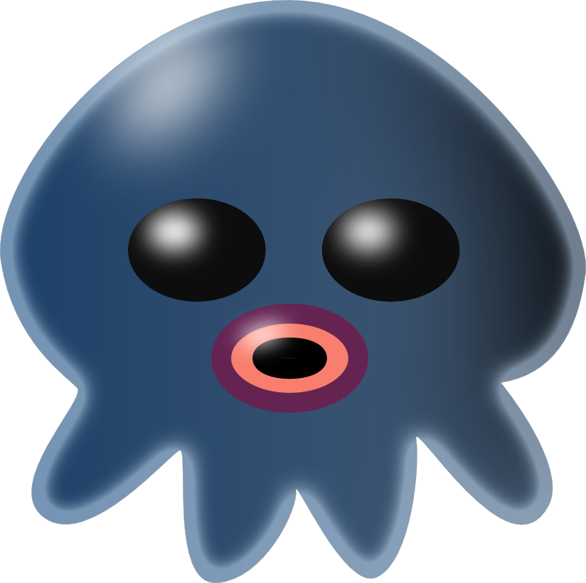
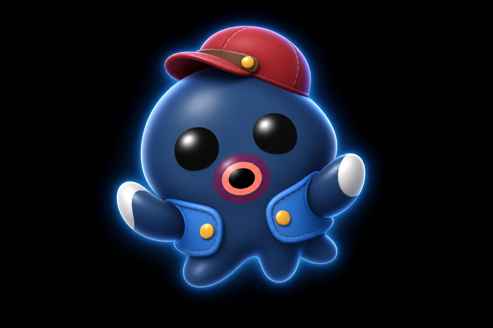
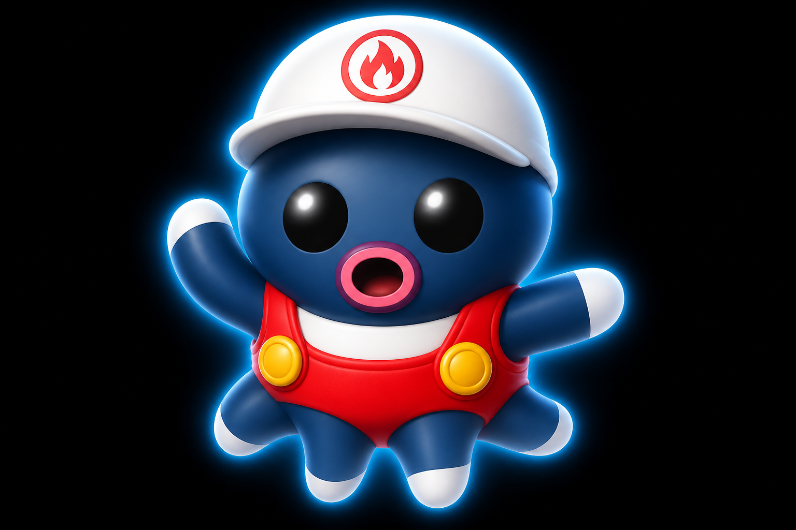
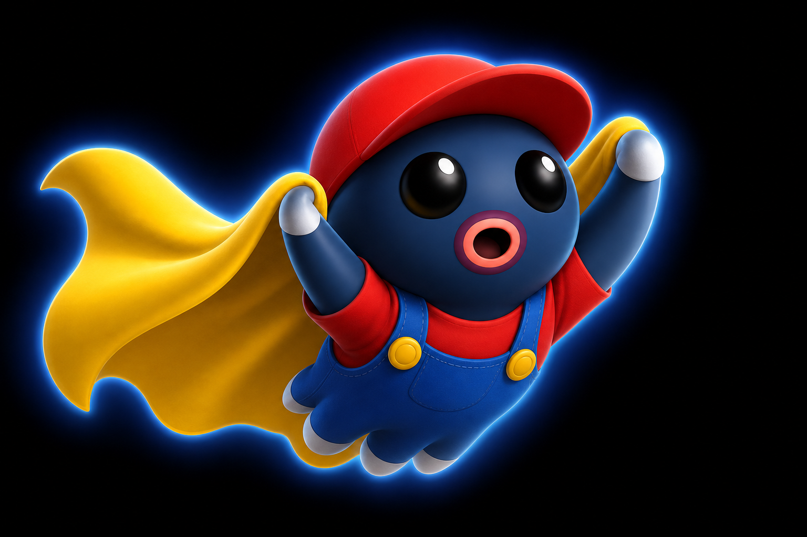
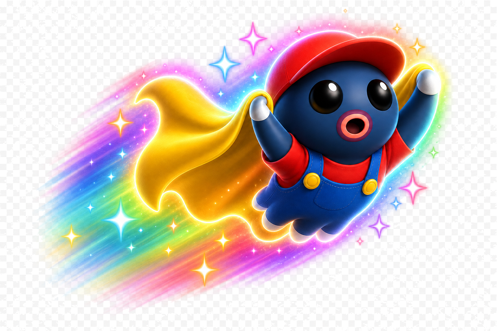

Départ
Bootcamp C++

01 · Printf
À brancher


02–03 · Variables & Conditions
À brancher

04–05 · Boucles & STD
À brancher

06–07 · Conteneurs & Struct
Boss final · À brancher

Power-up
Champignon
Champignon

Power-up
Fleur de feu
Fleur de feu

Power-up
Plume
Plume

Power-up
Étoile
Étoile
Modules du parcours
- 01 Printf — lien carte / guide à ajouter
- 02 Variables — à brancher
- 03 Conditions — à brancher
- 04 Boucles — à brancher
- 05 STD & Fonctions — à brancher
- 06 Conteneurs — à brancher
- 07 Struct & Méthodes — à brancher
Phase 2 : déplacement du poulpe le long du S · collecte des items · liens vers les cartes Frogger